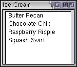
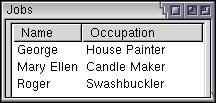
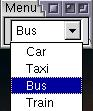

List Controls
XUL has a number of types of elements for creating list boxes.
List Boxes
A list box is used to display a number of items in a list. The user may select an item from the list.
XUL provides two types of elements to create lists, a listbox element to create multi-row list boxes, and a menulist element to create drop-down list boxes. They work similar to the HTML select element, which performs both functions, but the XUL elements have additional features.
The simplest list box uses the listbox element for the box itself, and the listitem element for each item. For example, this list box will have four rows, one for each item.
Example 2.5.1: Source View<listbox> <listitem label="Butter Pecan"/> <listitem label="Chocolate Chip"/> <listitem label="Raspberry Ripple"/> <listitem label="Squash Swirl"/> </listbox>
 Like with the HTML option element, you can assign a value for each item using the value attribute. You can then use the value in a script. The list box will default to a suitable size, but you can control the size with the rows attribute. Set it to the number of rows to display in the list box. A scroll bar will appear that the user can use to display the additional rows.
The following example demonstrates these additional features:
Example 2.5.2: Source View<listbox rows="3"> <listitem label="Butter Pecan" value="bpecan"/> <listitem label="Chocolate Chip" value="chocchip"/> <listitem label="Raspberry Ripple" value="raspripple"/> <listitem label="Squash Swirl" value="squash"/> </listbox>
The example has been changed to display only 3 rows at a time. Values have also been added to each item in the list. List boxes have some additional features, which will be described later.
Multi-Column List Boxes
The listbox also supports multiple columns. Each cell may have arbitrary content within it, although usually only text is used. When the user selects an item in the list, the entire row is selected. You cannot have a single cell selected.
Two tags are used to specify the columns in the listbox. The listcols element is used to hold the column information, each of which is specified using a listcol element. You will need one listcol element for each column in the listbox.
The listcell element may be used for each cell in a row. If you want to have three columns, you will need to add three listcell elements inside each listitem. To specify the text content of a cell, place a label attribute on a listcell. For the simple case where there is only one column, you may also place the label attributes directly on the listitem elements and leave the listcell elements out entirely, as was seen in the earlier listbox examples.
The following example is of a listbox with two columns and three rows:
Example 2.5.3: Source View<listbox>
<listcols>
<listcol/>
<listcol/>
</listcols>
<listitem>
<listcell label="George"/>
<listcell label="House Painter"/>
</listitem>
<listitem>
<listcell label="Mary Ellen"/>
<listcell label="Candle Maker"/>
</listitem>
<listitem>
<listcell label="Roger"/>
<listcell label="Swashbuckler"/>
</listitem>
</listbox>Header Rows
List boxes also allow a special header row to be used. This is much like a regular row except that it is displayed differently. You would use this to create column headers. Two new elements are used.
The listhead element is used for the header rows, just as the listitem element is used for regular rows. The header row is not a normal row however, so using a script to get the first row in the list box will skip the header row.
The listheader element is used for each cell in the header row. Use the label attribute to set the label for the header cell.
Here is the earlier example with a header row:
Example 2.5.4: Source View<listbox>
<listhead>
<listheader label="Name"/>
<listheader label="Occupation"/>
</listhead>
<listcols>
<listcol/>
<listcol flex="1"/>
</listcols>
<listitem>
<listcell label="George"/>
<listcell label="House Painter"/>
</listitem>
<listitem>
<listcell label="Mary Ellen"/>
<listcell label="Candle Maker"/>
</listitem>
<listitem>
<listcell label="Roger"/>
<listcell label="Swashbuckler"/>
</listitem>
</listbox> In this example, the flex attribute is used to make the column flexible. This attribute will be described in a later section, but here it allows the column to fill all of the remaining space horizontally. You can resize the window to see that the column stretches as the window does. If you shrink the size horizontally, the labels on the cells will crop themselves automatically using an ellipsis. You can use the crop attribute on the cells or items set to the value none to disable the ellipsis.
Drop-down Lists
Drop-down lists can be created in HTML using the select element. The user can see a single choice in a textbox and may click the arrow or some similar such button next to the textbox to make a different selection. The other choices will appear in a pop-up window. XUL has a menulist element which can be used for this purpose. It is made from a textbox with a button beside it. Its name was chosen because it pops up a menu with the choices in it.
Three elements are needed to describe a drop-down box. The first is the menulist element, which creates the textbox with the button beside it. The second, menupopup, creates the popup window which appears when the button is clicked. The third, menuitem, creates the individual choices.
Its syntax is best described with the example below:
Example 2.5.5: Source View<menulist label="Bus">
<menupopup>
<menuitem label="Car"/>
<menuitem label="Taxi"/>
<menuitem label="Bus" selected="true"/>
<menuitem label="Train"/>
</menupopup>
</menulist> This menulist will contain four choices, one for each menuitem element. To show the choices, click the arrow button on the menulist. When one is selected, it appears as the choice in the menulist. The selected attribute is used to indicate the value that is selected by default.
By default, you can only select choices from the list. You cannot enter your own text by typing it in. A variant of the menulist allows editing the text in the field. For example, the URL field in the browser has a drop-down for selecting previously typed URLs, but you can also type them in yourself.
To create an editable menulist, add the editable attribute as follows:
Example 2.5.6: Source View<menulist editable="true">
<menupopup>
<menuitem label="www.mozilla.org"/>
<menuitem label="www.xulplanet.com"/>
<menuitem label="www.dmoz.org"/>
</menupopup>
</menulist>The URL field created here has three pre-populated choices that the user can select or they can enter one of their own by typing it into the field. The text the user enters is not added as a new choice. Because the label attribute was not used in this example, the default value will be blank.
(Next) In the next section, we'll learn about creating progress meters.